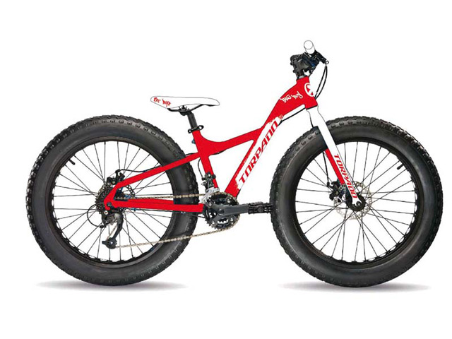

Bicicletas de Montaña (MTB)

Las bicicletas de montaña (también conocidas como MTB) están diseñadas para “fuera de ruta” por lo que son bastante resistentes. Están equipadas con llantas anchas con dibujos marcados para mejorar el agarre en terrenos sueltos. Regularmente usan manubrios rectos o de doble altura.
Las MTB se pueden encontrar sin suspensión (rígidas), con suspensión delantera (hardtail) o con doble suspensión (full-suspension) dependiendo de su especialidad:
Cross country
Enduro
Downhill
Freeride
Bicicletas de Ruta

Son bicicletas orientadas a obtener velocidad en pavimento, de construcción más ligera que otras bicicleta, están dotadas con ruedas más grandes, delgadas y provistas de llantas angostas y con dibujo liso. Las bicis de ruta utilizan manubrios drop-bar para lograr una postura más aerodinámica.
Bicicletas Híbridas

Las bicicletas híbridas son bastante versátiles ya que combinan características de las bicis de montaña y de las de ruta.Estas bicicletas nacieron como una solución para quienes necesitan una bicicleta para la ciudad, pero que tenga la flexibilidad de ser usada en diferentes terrenos. Los cuadros son resistentes y con una geometría que permite adoptar una posición cómoda que permite relajar los brazos y el cuello.
Bicicletas Urbanas

En este caso nos referimos como bicicleta urbana a las bicis estilo holandés (Dutch).
Estas bicicletas fueron concebidas para la ciudad, por lo que son de construcción bastante solida tanto en su cuadro como en sus ruedas. Están perfectamente adecuadas para soportar lascondiciones de una ciudad (baches, banquetas, topes, etc.)
Por lo general cuenta con guardabarros para días de lluvia, portaequipaje y/o canasta para transportar todo lo que necesitas para ir al trabajo, al supermercado, etc. Una característica común en este tipo de bicicletas es la presencia de luces para mantenernos siempre visibles a los conductores.
Normalmente tienen una sola velocidad, o sistema de cambios internos de ser necesario.
Estas bicicletas permiten una posición relajada de torso y brazos.
Fixies y single speed

Si bien su conceptp es el de ser una bicicleta sencilla, se han convertido en algo así como las bicicletas de culto para el ciclismo urbano. Su principal característica es su diseño simple y en muchos casos minimalista, sumamente eficientes y funcionales.
Esta familia de bicis viene en varias formas y estilos; las hay con manubrios rectos, de doble altura, drop bars, bullhorns, etc.
Están equipadas con una sola velocidad por lo que requieren mucho menos mantenimiento que otras bicicletas. La diferencia entre las single-speed y las fixies es que en las single-speed utilizan una rueda libre, mientras que las fixies utilizan un piñón fijo.
Cruisers

Este tipo de bicicletas están diseñadas para trayectos cortos y sobre pavimento preferencialmente. Su geometría y manubrio característico permiten una postura sumamente relajada. Estas bicicletas suelen ser pesadas y usan llantas anchas lo que las hace poco eficientes en trayectos de más de 10km. Normalmente tienen una sola velocidad aunque algunos fabricantes tienen modelos con tres velocidades. Otra característica común en las cruiser son los frenos de contrapedal.
BMX

Las BMX utilizan cuadros pequeños y resistentes, ideales para saltos y acrobacias. Existen diferentes variables de estas bicicletas, algunas con llantas anchas para usarse en terrenos sueltos y otras con llantas un poco más delgadas y lisas para usarse en rampas o en la calle. Estas bicicletas no son eficientes como medio de transporte.
Touring

Estas bicicletas se usan para recorrer largas distancias y cargar peso. Sus cuadros son muy robustos e incluyen monturas para instalar rack trasero y delantero además de varias caramañolas. Aunque la gran mayoría de estas bicicletas utilizan drop-bars también son comunes los manubrios de trekking, rectos y de doble altura, dependiendo del tipo de viaje que se vaya a realizar.
Tienen un gran rango de velocidades: suficientemente bajas que facilitan subir pendientes bastante pronunciadas al estar completamente cargadas y velocidades altas para mantener la velocidad aun en las bajadas. Están equipadas con frenos potentes, generalmente frenos de disco o cantilever (los tradicionales).Los rodados comunes son de 26
Fat Bikes

Son de reciente aparición y su uso principal es sobre terrenos con nieve o arena, grandes piedras, raíces, et. La principal característica de estas bicicletas son sus llantas rodado 26″ sumamente anchas (normalmente de entre 3 y 3.6 pulgadas). La geometría de su cuadro es muy similar a una bicicleta de montaña con la diferencia de que usa tijera/horquilla y vainas con holgura adecuada para las ruedas gordas. Estas bicis están equipadas con velocidades múltiples y frenos de disco.


 1
1 2
2 4
4 5
5 8
8